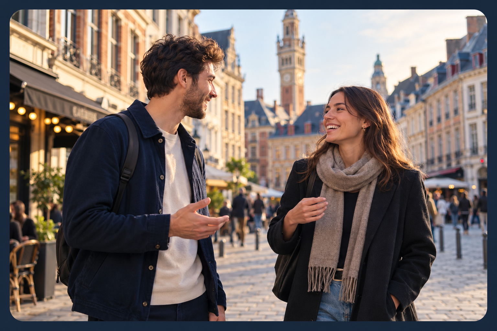

Dépasser l'hésitation
Seul en ville, on renonce souvent à la dernière seconde. Être à deux crée l'élan qui aide à franchir le pas sans se mettre trop de pression.
Apprendre à aborder quelqu'un qui vous plaît, engager une conversation et faire des rencontres spontanées. Ensemble, c'est plus facile.
Wingmen Lille est un collectif local d'entraide en cours de création. Il réunit des adultes — hommes et femmes — qui souhaitent sortir des applications et s'entraîner concrètement à aller vers les autres dans la vie réelle.

J'habite dans la métropole lilloise et j'aimerais progresser dans ma capacité à engager spontanément des conversations, particulièrement avec des femmes qui me plaisent.
Quelques séances de coaching m'ont fait réaliser une chose essentielle : la simple présence d'une personne qui m'accompagne, me motive et m'encourage suffit souvent à dépasser l'appréhension du premier contact.
Comme les coachings spécialisés sont extrêmement coûteux, j'ai imaginé une alternative locale et gratuite : réunir à Lille des personnes qui s'entraident pour apprendre à faire des rencontres spontanées.
À l'origine, le wingman est l'ailier qui épaule un pilote. Chez Wingmen Lille, le terme désigne un partenaire d'entraide, homme ou femme : chacun est tour à tour accompagné et accompagnateur.
Seul en ville, on renonce souvent à la dernière seconde. Être à deux crée l'élan qui aide à franchir le pas sans se mettre trop de pression.
Échanger juste après une tentative permet de relâcher la tension, de sourire de ses hésitations et de garder un état d'esprit léger.
La pratique régulière aide à ancrer des repères simples pour oser ensuite engager la conversation seul(e) dans son quotidien.
Plutôt que de simples sorties informelles, nous proposons une progression structurée où chacun évolue à son rythme.
Apprendre à dépasser l'appréhension du premier contact grâce à de petits exercices adaptés au niveau de chacun.
Développer la spontanéité, l'écoute et l'aptitude à engager puis prolonger une conversation naturelle.
Apprendre à exprimer naturellement son intérêt pour quelqu'un, proposer de se revoir lorsqu'il existe une réciprocité et accepter sereinement un refus.
S'encourager entre partenaires, partager des retours constructifs, suivre sa progression et devenir progressivement autonome.
Pendant les séances, chacun avance grâce à une boucle simple en quatre étapes :
Choisir un défi réaliste et précis, adapté à son aisance du jour.
Aller vers les autres dans des lieux publics, avec le soutien discret du binôme.
Faire le point à chaud avec ses partenaires sur ce qui a aidé ou bloqué.
Ajuster l'étape suivante pour l'essai d'après ou la prochaine rencontre.
Cette méthode constitue un point de départ pragmatique et collaboratif, amené à évoluer avec l'expérience des participants.
Le collectif démarre : voici comment nous envisageons le déroulement de nos prochains rendez-vous en petit groupe.
On se retrouve autour d'un verre dans le centre de Lille pour faire connaissance au calme.
Chacun choisit l'exercice personnel qu'il souhaite réaliser pendant la sortie, selon son aisance.
Mise en situation dans des lieux publics à proximité, seul ou en binôme, dans le respect de chacun.
Retour au café pour partager ses expériences, échanger sur ses difficultés et s'encourager.
Chacun repart avec une piste personnelle pour la séance suivante.
L'idée n'est pas de séduire d'emblée, mais de s'habituer à initier un premier contact simple et agréable en public.
« Engager 3 courts échanges de 30 secondes (demander un conseil ou faire une remarque spontanée sur le contexte) en maintenant le regard et une voix posée. »
L'enjeu est de dépasser la simple question pratique pour installer une vraie discussion fluide et détendue.
« Engager la conversation avec deux personnes et prolonger l'échange pendant 2 à 3 minutes en rebondissant naturellement sur leurs réponses. »
L'enjeu est d'aller parler à quelqu'un qui nous plaît sincèrement, d'exprimer sa démarche sans détour et d'écouter la réciprocité.
« Aborder une personne qui me plaît, exprimer avec naturel pourquoi je suis venu(e) lui parler, et proposer de se revoir si l'échange est chaleureux et partagé. »
Wingmen Lille démarre maintenant. Ce site a pour but de réunir les premières personnes intéressées afin d'organiser nos premières rencontres à Lille et de construire le collectif ensemble.
Aux adultes de la métropole lilloise, hommes et femmes, qu'ils soient débutants ou déjà plus à l'aise, qui souhaitent faire davantage de rencontres dans la vie réelle plutôt que de dépendre uniquement des applications.
Une fois le formulaire rempli, je vous recontacte personnellement par e-mail. Les premières rencontres pourront se dérouler simplement autour d'un verre à Lille pour faire connaissance avant de lancer les séances pratiques.
Un groupe privé (par exemple sur WhatsApp) pourra ensuite être constitué avec les membres actifs, uniquement avec leur accord, pour coordonner facilement les sorties.
Non. S'entraîner à plusieurs aide concrètement à dépasser l'appréhension du premier pas et à multiplier les échanges naturels, mais une rencontre dépend toujours de la réciprocité.
Vous habitez dans la métropole lilloise et l'initiative vous parle ? Laissez vos coordonnées via le formulaire pour participer aux premières rencontres.
Sur smartphone, vous pouvez ouvrir le questionnaire en plein écran pour plus de confort, ou le remplir directement ci-dessous :
Ouvrir le questionnaire en plein écran